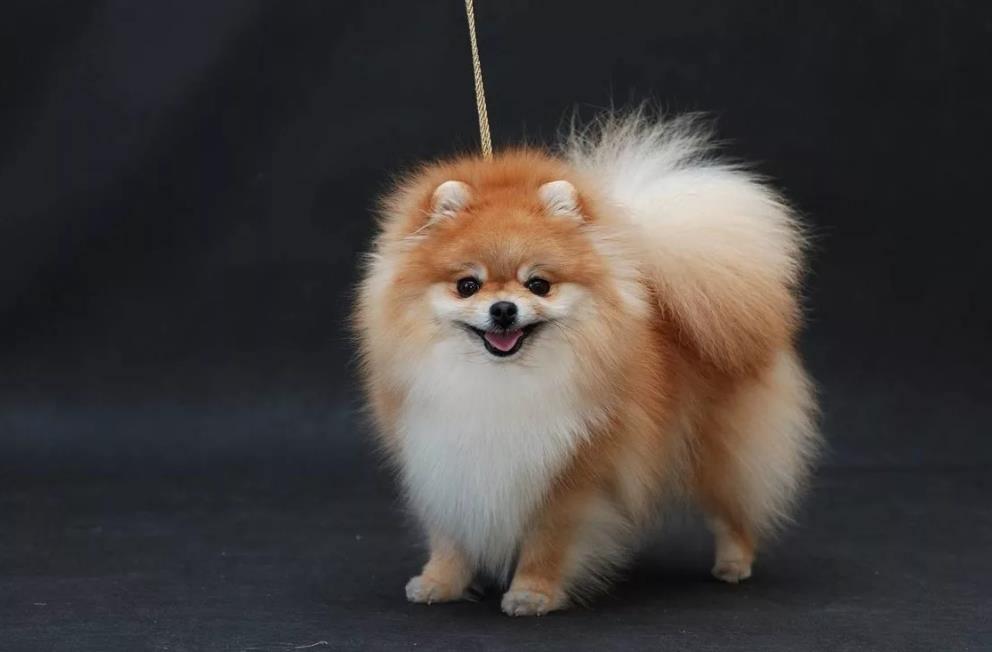

Породу МКФ считает отдельной, в отличие от АКС (американский клуб), который относит ее к ветке Немецких шпицев. На самом деле, Померанцы действительно вывелись от немецких собратьев, но отличаются внешне: у них мягкая плюшевая шерсть (которая редко линяет), более короткая морда, пушистый округлый лоб.

Появились собаки в Померании, северной части Германии, но приобрели современный вид в Англии под руководством королевы Виктории. На островах животные стали меньше (самые маленькие среди Шпицев, до 22 см в холке), пушистее и милее.
Правильный экстерьер Померанца – острая лисья мордочка. Кукольные и медвежьи типы – выдумка хозяев и недобросовестных заводчиков, поощряющих разведение нестандартных щенков. К выставкам допускаются только «лисий» тип.
Собака на пружинках, самая активная, игривая и шумная. Померанец никогда не устает, щенки даже ночью лают и бегают, им нужны длительные прогулки и интенсивные тренировки. Шпицы слишком дружелюбные, не отличат врага от друга, любят всех людей, детей и питомцев. Но псы часто эгоистичные, обидчивые, умеют манипулировать, поэтому требуют серьезного воспитания.